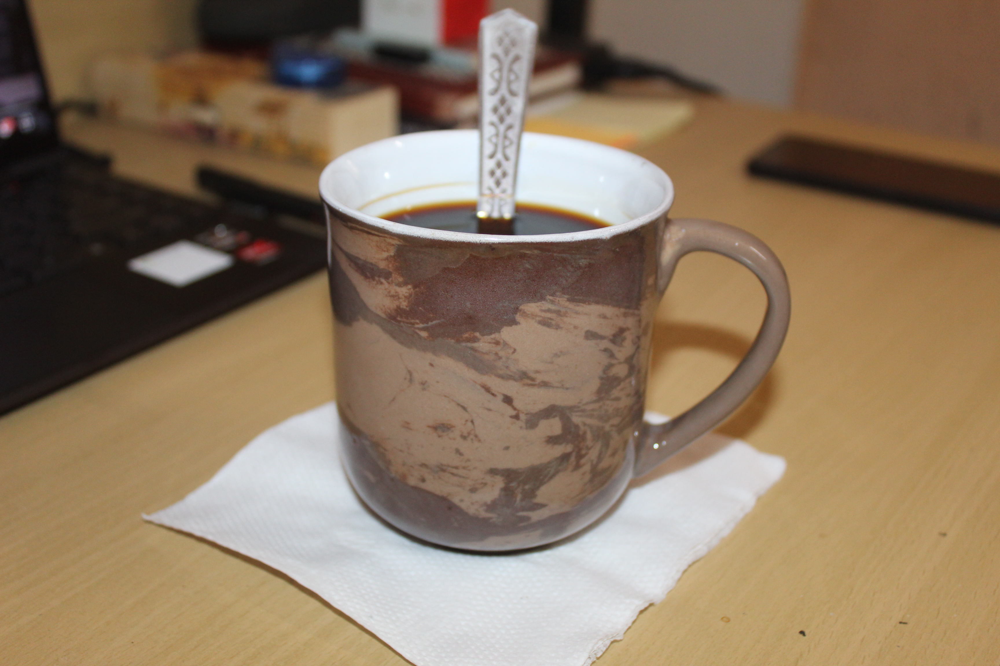

This is a paragraph
This is a link to my blog
Here is Second Page
 I have been a regular coffee person and rarely miss my coffee. For most of my life, I have been drinking instant coffee. My favourite instant coffee brands are "BRU Gold" and "House Of Coffee". I was just surfing youtube, and I discovered a video of Aeropress. While I found that video of making coffee using AeroPress oddly satisfying, there was a bunch of stuff I didn't understand, like what "brewing" means, what are "coffee grounds", why don't people just drink grounds with coffee, what's the need to have such brewing equipment, just mix coffee & water and drink for god's sake.